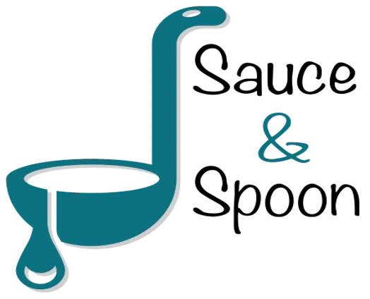

Sauce & Spoon
Proyecto final del curso de Google Project Management (2023). La descripción se mantiene en su idioma original.

In my capstone project for the Google Project Management course, I led the role of Peta, the project manager, in overseeing the documentation update for a successful launch. The project scenario revolved around Sauce & Spoon, a small restaurant chain aiming to achieve its annual growth and expansion objectives. To fulfill these goals, they embarked on a pilot project to assess the impact of implementing new tabletop menu tablets. These tablets were expected to enhance efficiency by serving more guests in less time while also generating valuable data to align Sauce & Spoon with its business objectives.
During the project, I achieved the following:
- Conducted a thorough analysis of project documents and supporting materials to identify project requirements, evaluate stakeholders, and devise problem-solving strategies.
- Completed a project charter and utilized it as a tool to align project scope and goals among stakeholders.
- Specified project goals to make them SMART and applied practical negotiation skills with stakeholders to prioritize project objectives effectively.
- Constructed a comprehensive project plan by examining project documentation, conducting online research, analyzing critical conversations to identify tasks and milestones, and then documenting and prioritizing them in the project plan.
- Demonstrated effective communication techniques for accurately estimating time required for project tasks.
- Defined and described quality management standards, evaluating the project against those benchmarks to ensure it met the required quality levels.
- Formulated evaluation questions derived from survey data and learned how to share qualitative information effectively.
- Acquired strategies to facilitate a productive retrospective by encouraging participation, accountability, and maintaining a positive environment.
- Learned how to communicate and escalate project issues to stakeholders, showcasing impact through effective reporting strategies.